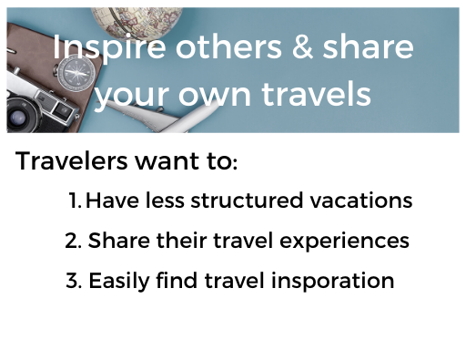
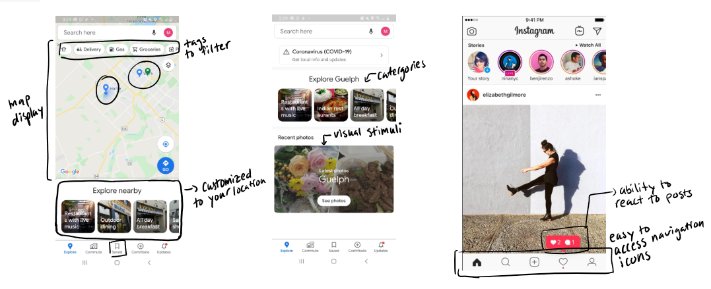
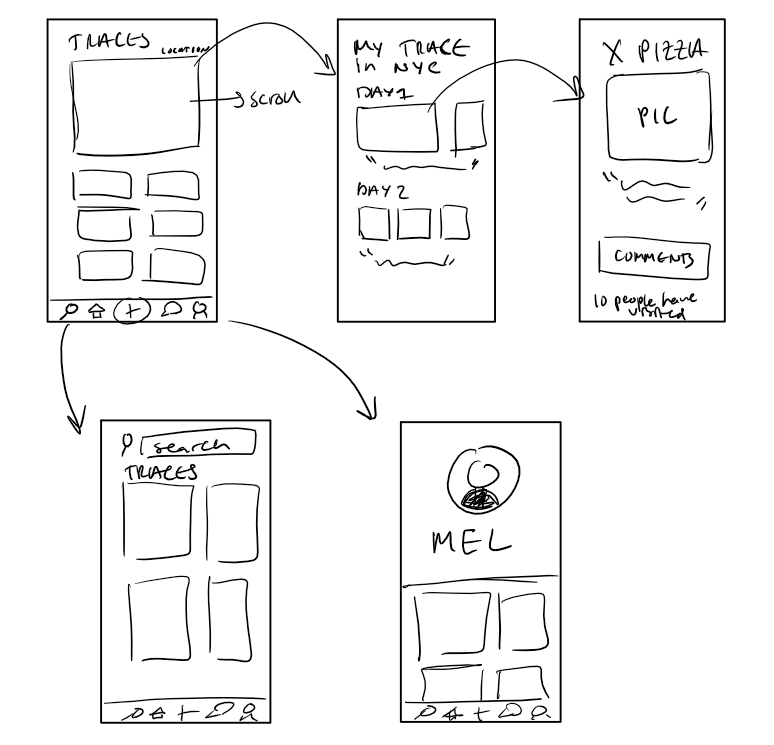
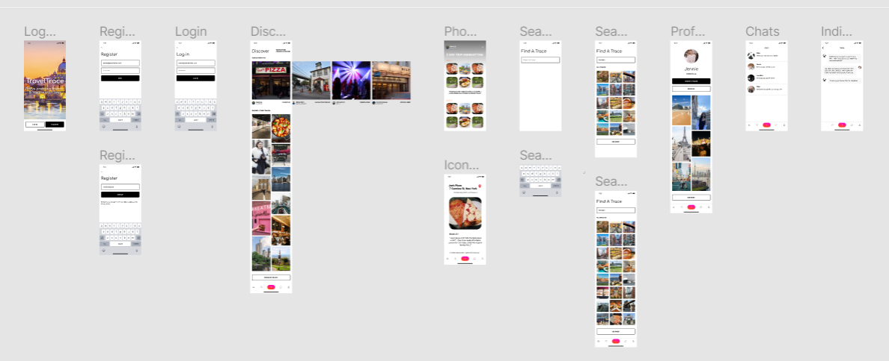
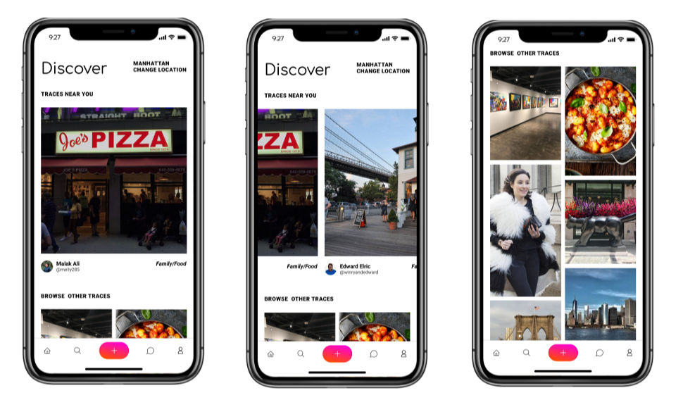
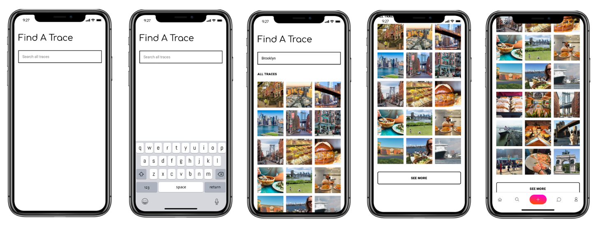
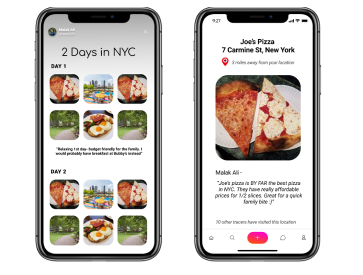
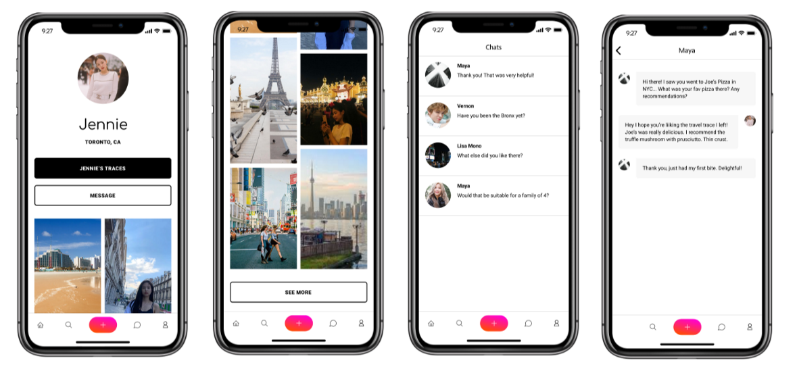

Introducing TravelTrace
TravelTrace allows you to view a trace of a fellow traveler's experience at your location, to help inspire your own trace and create spontaneous memories!
My Role : Product Design, User Research, User Interface Design
Overview : In an effort to push myself creatively and stay productive during the COVID pandemic, I participated in a 24 hour long hackathon in which I interviewed traveller's, conducted a competitive analysis of similar applications, and created a medium-fidelity prototype of my application.
Step 1 : Research. Understanding the Travel Experience and the User.
Though many users can be identified, with a time constraint of 24 hours, I decided to focus on one group of users. Young Adults. Travel that is inspired by others and is spontaneous in nature lends itself best to young adults. This is because they are often willing to try new things and become inspired by someone else's shared experience on a mobile app. Families are more likely to go more structured trips as the number of travellers increase. Though it is important to note that this app could target a wider demographic in the future, such as families and older adults.
Thus to better understand the desired travel experience for young adults, I carefully created and sent out neutral questionnaires using typeform to 98 people and conducted structured in person interviews to learn more about their travel experiences.
Here is a visual summary of the results!
.png)
Step 2 : Synthesis of Data. Identifying Key Features.
The results were interesting. I'd like to note that while conducting interviews, many young adults seemed to want more spontaneity in their vacations, they aren't confident enough to go for it! Of the 10 interviewed, 7 credited this due to a fear of not getting their money's due to a lack of planning.
Hence, I summarized the 3 key features my solution would have to encompass.

Step 3 : Competitive Analysis. Identifying strengths and weaknesses of competitors.
With now an idea of our key features, let's take a look at how some competitors achieve those features.
I identified Google Maps and Instagram as competitors that aren't necessarily focused on travelling but embody some of the desired features of this app well. Instagram is easy and simple to use for posting on the platform and inspiring users. As well as allowing for interactions between users. On the other hand, Google Maps has a intuitive recommendations UI that is based on your location and can be filtered through the use of tags.
Features from Instagram to consider include the ability to react to posts and the seamless navigation from discover, to profile, and to search.
Features from Google Maps to consider include visual stimuli, ability to filter, and catergories.
Step 4 : Prototyping. Prototyping TravelTrace
Now that it's time to start working on the prototype. I created somes sketches to plan out the user flow and information architecture.

I translated all of my ideas and information from the research, synthesis, analysis, and information flow stage, into a medium-fidelity prototype on Figma. Below is the workspace.

The Homepage

As I designed the homepage I focused on the Discovery of “traces” to explore. The discover section is tailored to your current location with easy access to change it. You can also view the tags associated with each trace to prime the user for an understanding of each trace before they ever tap on it. The user can scroll further to view more traces in the area in the form of a grid of images. This image focused and simple display reduces the effort to view desired content.
Search

I designed the search section with the main focus of inspiring users to try new travel locations (traces) near them. Hence, I designed a dense but breathable photo grid to maximize the visually appealing content, but inserting some breaks with the ability to see more to make the grid less overwhelming. Furthermore, I would implement a filter functionality to customize traces for the user.
Traces

Traces can be accessed from anywhere by tapping on any Trace preview. As I designed the trace section I wanted to focus on creating a memory of the travel in a digestible format that outlined each traveler’s day with images of highlights from that day. Hence, I created photo grids that summarized each day. Below is a small comment that summarizes the traveler’s day along with what they liked or would do differently.
I wanted to ensure users could receive all the information needed from the specific item page without the need of a supplementary app like Google Maps. Hence, by expanding a item from the grid, the name of the location, distance away, and a small review are displayed. To foster a sense of community, the number of previous app users who visited is also displayed on the bottom. The next step for this would be to allow for maps integration to navigate to the specified location.
Profiles & Chats
